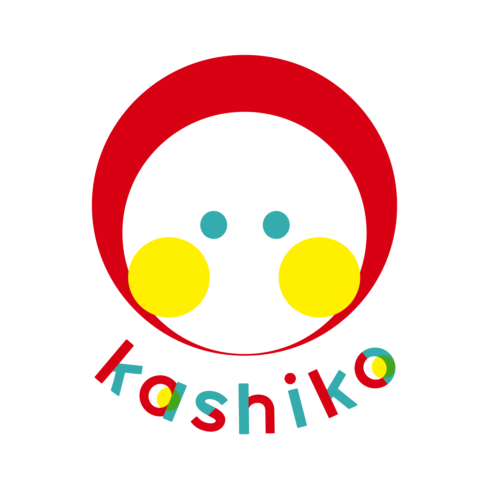
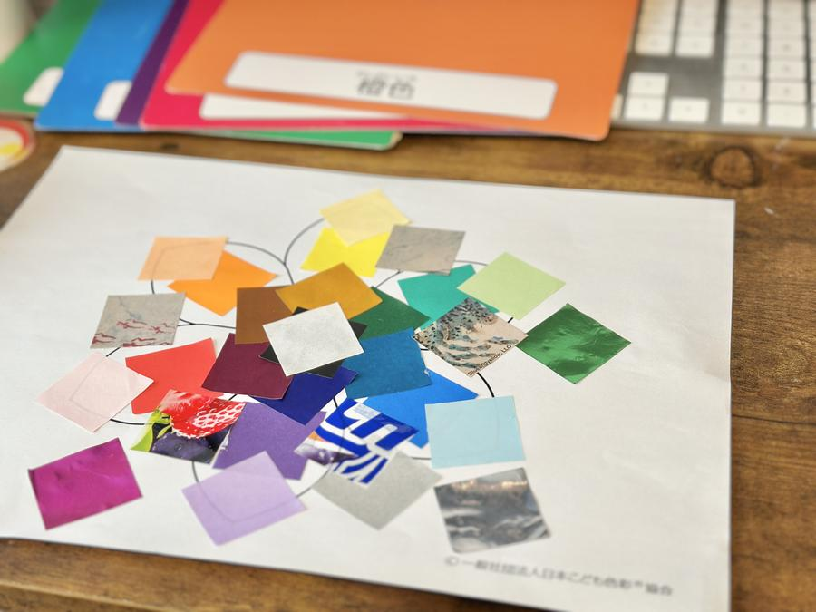
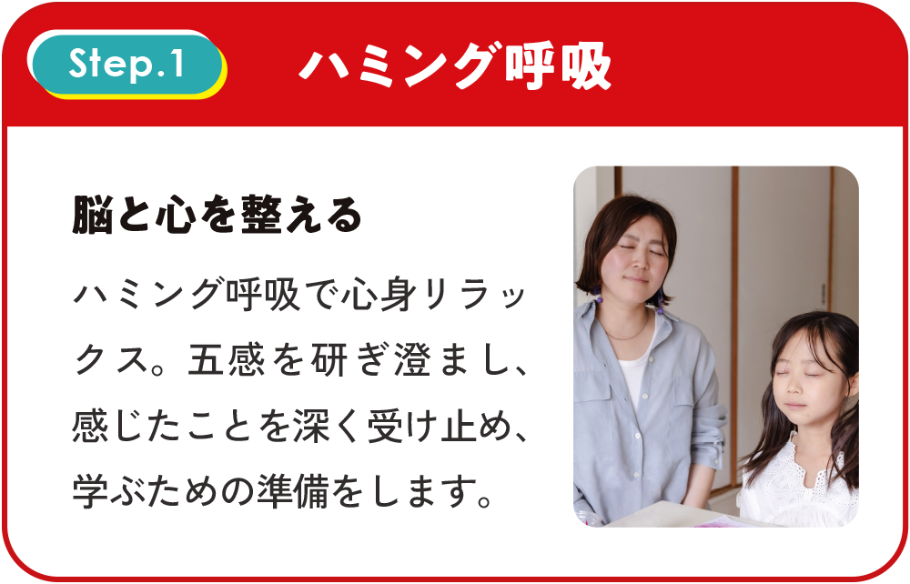
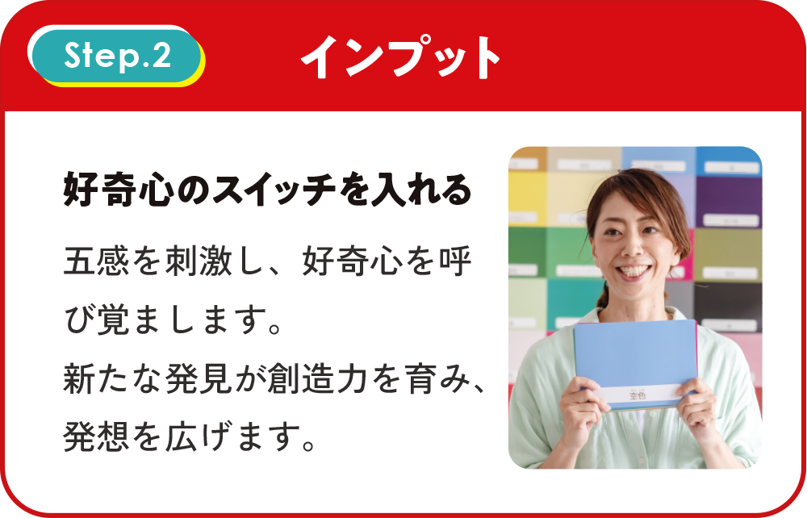
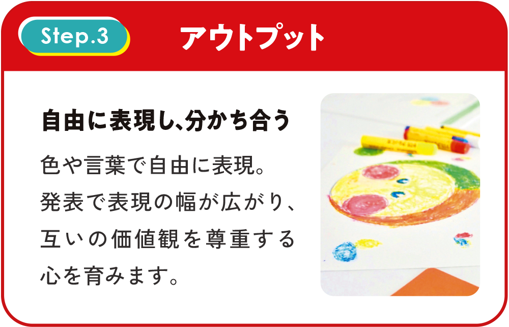
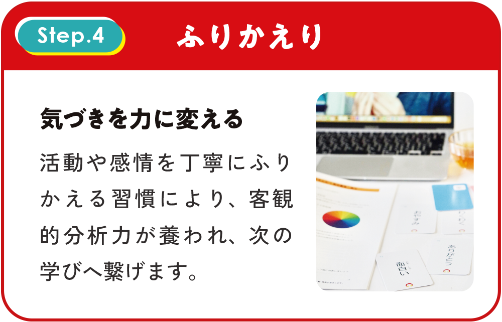
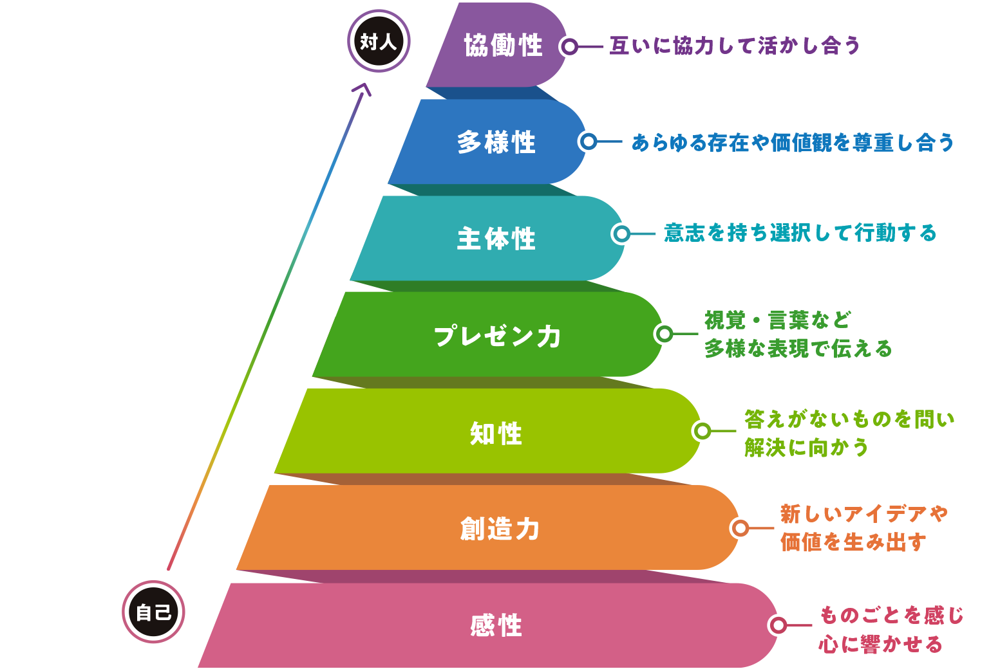

kashiko® Method
脳科学・心理学・大脳生理学をベースに
開発された教育メソッド
年齢や発達の特性に関係なく、すべての人が知性と個性を伸ばし、
自分らしく成長できるよう設計された「3つのアプローチ」で、
脳と心にそっと働きかけます。



繊細なお子さんの感性を、色でそっと引き出す。
親子で楽しむ60分の体験レッスンです。

For Mamas
わが子が学校に行けない日々。
「このままでいいのか」と、漠然とした不安に押しつぶされそうになることはありませんか？
Solution
どんな自分でも大丈夫と思える安心感が土台になるとき、
子どもはちゃんと自分の力で育っていきます。
kashiko® Method
年齢や発達の特性に関係なく、すべての人が知性と個性を伸ばし、
自分らしく成長できるよう設計された「3つのアプローチ」で、
脳と心にそっと働きかけます。
Lesson Flow




7 Powers
kashiko®メソッドでは、まず「感性」という土台を丁寧に耕します。
そこから創造力・知性・プレゼン力・主体性・多様性・協働性が
自然と育まれていきます。

Trial Lesson
似た色や柄をじっくり観察して、「これはどの色の仲間かな？」と考えながら色を分けて貼っていく、カラフルなお花づくりのワークです。
正解はありません。
大切なのは完成した作品ではなく、お子さんが「どうしてここに貼ったのか」という理由や、自分で考えて決めたプロセスです。
親が評価を手放し、「そう見えたんだね」と受け止めることで、お子さんは「自分で決めていいんだ」という主体性を確かなものにしていきます。
| 日時 | 2025年6月25日（木）10:30〜11:30 |
| 受講方法 | オンライン（Google Meets） |
| 対象 | 不登校・ホームスクーリングを選択しているお子さんを育てているママ |
| 料金 | ¥1,100（税込） |
教室入会への無理な案内はいっさいありません。
まずはホッと一息つける時間として、
おうちという一番安全な場所から参加していただけます。
「やってみたいな」と感じたその気持ちだけで、十分です。
おうちで、
親子の温かい対話の時間を
一緒に体験してみませんか？
60分。それだけでいいんです。